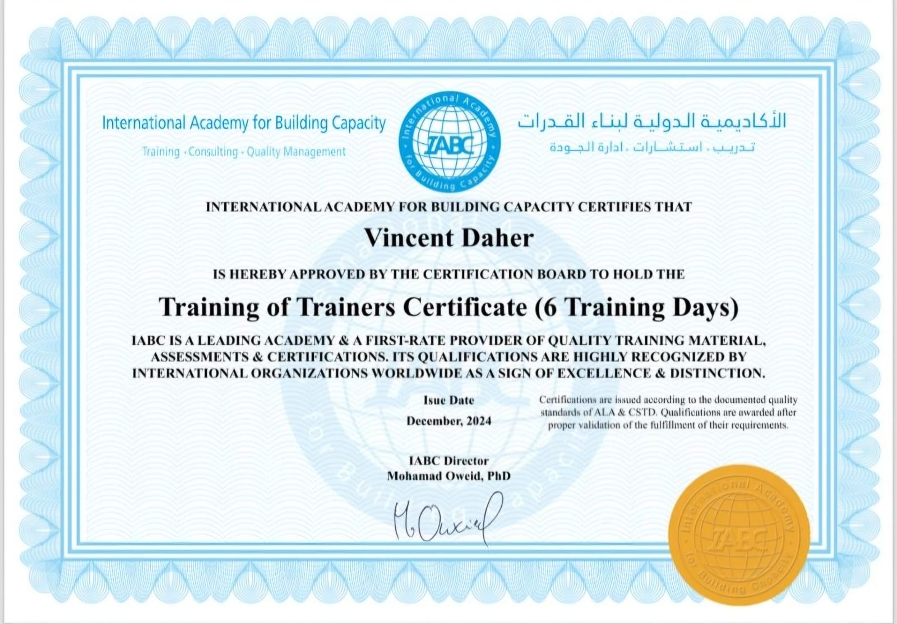

Curriculum vitae
Download my professional CV in PDF format.
Download CVCurriculum vitae

Professional profile
My CV presents my academic path, teaching experience, training work, and professional activities in mathematics education.
Download my professional CV in PDF format.
Download CVMathematics teacher at Notre Dame des Apotres School for Grade 6 and Grade 7 classes.
Master 1 in Mathematical Education at the Lebanese University, Faculty of Pedagogy - Deanery.
Training of Trainers certificate documenting professional development in training, communication, and educational support.
